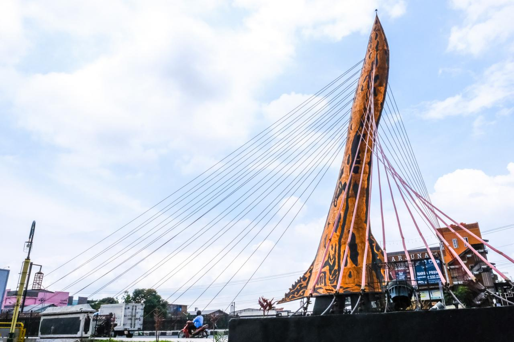
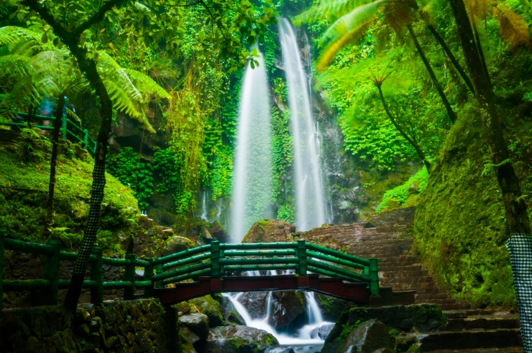

Budaya yang Kaya
Di tengah keramaian kota Solo, terdapat sebuah monumen yang menjadi simbol kebesaran dan
kejayaan Jawa Tengah, yaitu Tugu Keris. Berdiri kokoh di tengah Alun-Alun Utara Solo, tugu
ini merupakan destinasi wisata yang menarik bagi wisatawan lokal maupun mancanegara.
Tugu Keris Solo tidak hanya sebuah monumen biasa, tetapi juga mewakili kekayaan budaya
dan sejarah Jawa Tengah.Dalam bahasa Jawa, “keris” memiliki makna senjata tradisional yang
melambangkan keberanian, keadilan, dan kemuliaan. Dengan demikian, tugu ini
mencerminkan nilai-nilai luhur yang dimiliki oleh masyarakat Jawa Tengah.
Tugu Keris Solo didesain dengan arsitektur yang memukau dan menggabungkan unsur-unsur
tradisional Jawa dengan sentuhan modern. Monumen ini memiliki tinggi sekitar 17 meter dan
terdiri dari beberapa bagian yang saling melengkapi. Bagian paling atas berbentuk tumpukan
keris yang menjulang tinggi, sedangkan bagian bawahnya berbentuk puncak gunung yang
melambangkan kekokohan dan keabadian.

Keindahan Alam
Menjadi alternatif destinasi wisata yang menarik untuk dikunjungi di Kabupaten Karanganyar,
terutama bagi pecinta alam dan para wisatawan yang ingin bersantai dan melepaskan kepenatan
dari kehidupan perkotaan.
Air Terjun Jumog memiliki daya tarik utama berupa keindahan alamnya yang masih asri dan
belum banyak tersentuh oleh aktivitas manusia. Selain itu, air terjun ini memiliki ketinggian
sekitar 25 meter dan memiliki kolam alami yang cukup besar dibawahnya bawahnya.
Selain menikmati keindahan alam dan fasilitas yang disediakan, pengunjung juga dapat
melakukan beberapa aktivitas di sekitar Air Terjun Jumog, seperti berjalan-jalan di sekitar area
wisata, trekking di hutan sekitar air terjun, dan lainnya.